The feel
Synthwave is an imagined 1980s. It takes the parts of the decade that people find most evocative and modernises them until they are only just recognisable, or in the words of the producer Robert Parker, it is "nostalgia with selective memory loss".1 Its pictures come from a short list: neon pink and cyan, grid lines, an oversized striped sun at dusk, and chrome lettering crossed by a neon handwritten script.2
In games it usually means "angular concept cars screeching along retrofuturist highways through a miasma of purple and pink", with Tron's neon lines and Blade Runner's cityscapes behind them.1 James White, who designed Far Cry 3: Blood Dragon's logo and posters, describes the target as "a modern, unique take on that aesthetic from, like, '86 or '87".3
- night drive
- chrome
- laser-straight
- cocky
- wistful
- always sunset
Where it comes from
The name outrun comes from Sega's 1986 arcade game Out Run, where you drive a Ferrari Testarossa look-alike and pick one of three tracks on the car radio before the race.4 As music, synthwave grew in the mid-2000s out of 1980s pop culture, films and games.5 Kavinsky's 2013 album OutRun, with a Testarossa and palm trees on its cover, was popular enough to spawn its own subgenre.1 Nicolas Winding Refn's Drive put Kavinsky, College and Desire in front of a mainstream cinema audience a few months before Hotline Miami (2012) arrived with music by Perturbator, Jasper Byrne and Scattle.1 For Far Cry 3: Blood Dragon (2013), Ubisoft Montreal's Dean Evans brought in the Australian composers Power Glove, whose score was the first part of the game to be finished.3
Core elements
Striped sun
An oversized sun sits on the horizon at dusk, coloured in yellow to red and cut by stripes that recall vintage T-shirts.2
Glowing grid lines
Glowing grid lines run off to the horizon. The grid in Tron (1982) is their most likely origin,2 and Tron's neon lines still turn up across synthwave games.1
Neon pink and cyan on purple
Neon pink and cyan are everywhere in the style,2 usually floating in purple and pink haze.1 Blood Dragon's creative director built his pitch on his "penchant for hot pink hues".3
Chrome lettering with a neon script
Logos combine bold chrome sans-serif letters with handwritten text in a neon colour.2 Highly reflective chrome in vivid colours is one of the traits most often revived from 1980s design.6
Sports cars on open highways
The outrun branch is about driving: angular sports cars on endless highways, from Out Run's Testarossa look-alike4 to the Testarossa and palm trees on Kavinsky's OutRun cover.1
VHS-era references
The reference point is the VHS era. Blood Dragon's teaser opened with VHS-style tracking static, and its first clues were "lightning, vector grids, chrome letters, and hot pink paint splatters".3
How to do it
Tile the grid in a shader
Multiply your coordinates and take fract() to repeat the 0 to 1 range as a grid of cells.7 For each pixel, find the distance to the nearest line and soften the edge with fwidth and smoothstep. Use an unshaded material, so the lines keep the flat, glowing colour you gave them.8
Draw a pseudo-3D road
Out Run moved its road, cars and roadside scenery by scaling sprites in custom hardware.4 Lou's Pseudo 3d Page shows how to reach the detail of the first OutRun with arithmetic alone, including the moving road stripes that sell speed.9
Build the chrome from gradients
On a black background, fill the letters with a linear gradient from mid-blue to white at -90 degrees, then add handles that alternate blue and white.10 A black handle at 40% next to a transparent one at 40.1% gives the hard horizon line across the letters, and stacked gradient strokes add the highlights.10 Finish with the neon script over the top.2
Add fog and neon light
Blood Dragon kept Far Cry 3's engine, swapped the pirates for leather-clad cyborgs and filled the air with moody fog and neon light.3 Reworking that engine for the retro look was still a daunting job for the team.3
Use 1980s synthesisers and drum machines
Aim for 70 to 120 BPM with LinnDrum-style drums in a straight four on the floor, sweeping pads, plucky basslines and plenty of reverb.5 A software model of the Roland Juno-60 can stand in if you have no hardware.5 Gated snares and John Carpenter style synths are the shorthand everyone recognises.1
Offer a choice of radio stations
Out Run let you pick Magical Sound Shower, Passing Breeze or Splash Wave on the car radio at the start, years before Grand Theft Auto tried the idea.4
Cheat sheet
Do
- Keep the essential parts of the 1980s and put them in a modern context, instead of copying the period exactly.1
- Pair the chrome lettering with a neon handwritten script.2
- Tie the motion to the music. In Neon Drive the beat drives the whole world forward.1
- Finish the music early. Power Glove's score was done first, and the Blood Dragon team worked to it.3
Avoid
- Stopping at the trappings. PC Gamer's complaint about many synthwave games is that they hit the recognisable motifs and offer nothing more.1
- A palette swap and nothing else. The same writer called Blood Dragon "Far Cry 3 with a palette swap squeezed out of Drive's poster".1
- Roman busts, glitch art and slowed, chopped samples. That is vaporwave, which satirises consumer culture instead of celebrating the decade.5
Tools and tutorials
- Into the Synthwave
A full landscape with geometry nodes: grid, mountains and sun.
- Retro 80s sun and grid shader
The sun and grid as a shader you can drop into a scene.
- The Book of Shaders
step, fract and smoothstep explained, the three functions this style runs on.
- Vital
A free wavetable synth for the saw bass and pads.
- TAL-U-NO-LX
A software model of the Roland Juno-60.5
- Lou's Pseudo 3d Page
How Out Run style roads, stripes and hills are drawn, step by step.
- How To Create a Chrome Text Effect in Adobe Illustrator
Chris Spooner's chrome lettering from layered gradients.
Palette
The sun colours and dusk violet are sampled from FM-84's Atlas cover. Cyan, magenta and night come from the Blood Dragon soundtrack cover, and purple from its key art. Click a stripe to copy it.
Feel the vibe
In motion
Listen
One of the three tracks on Out Run's car radio, the game the scene's other name comes from.4
YouTubeFrom Far Cry 3: Blood Dragon. The score was the first part of the game to be finished.3
YouTubeThe clean, dreamy branch. Warm pads and a steady drive, good for menus and long roads.
YouTubeFrom Atlas. Vocals and a big gated snare, the pop end of the scene.
YouTubeFrom the 2015 album on this page. Darker and heavier, for when the night turns.
YouTubeThe track from Drive that made Kavinsky famous, played live at the end of the Paris 2024 Olympics.5
YouTube
More references
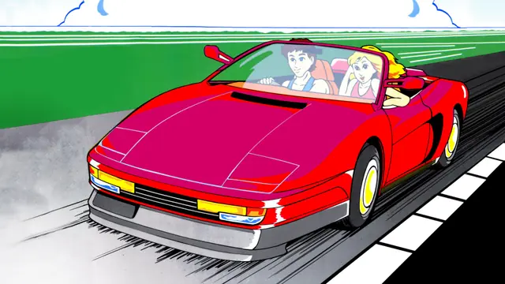
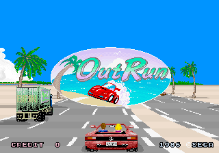
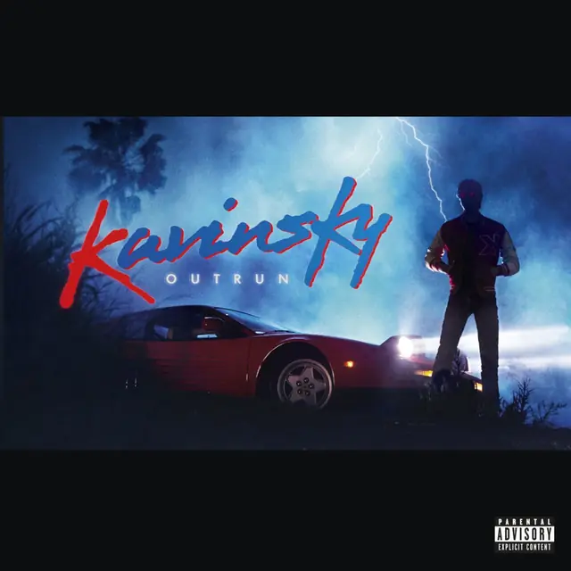
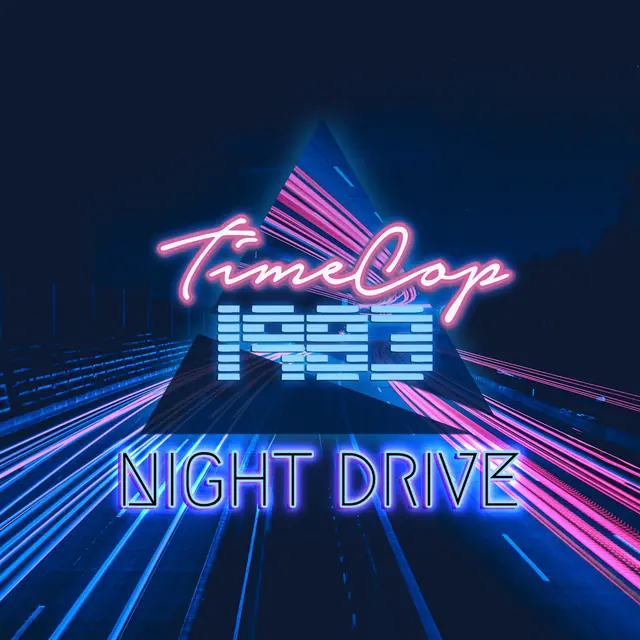
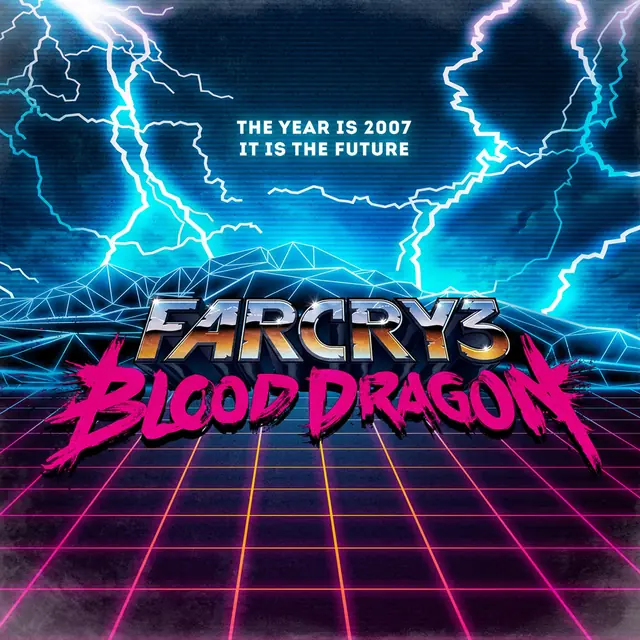
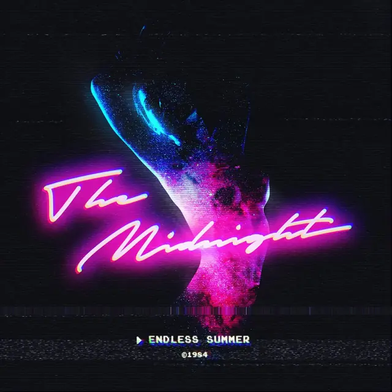
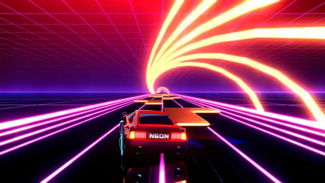
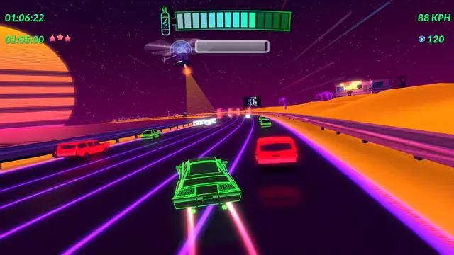
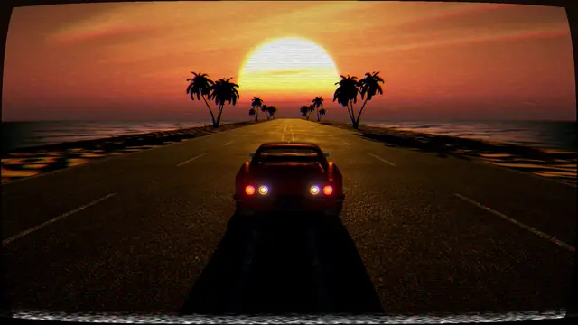
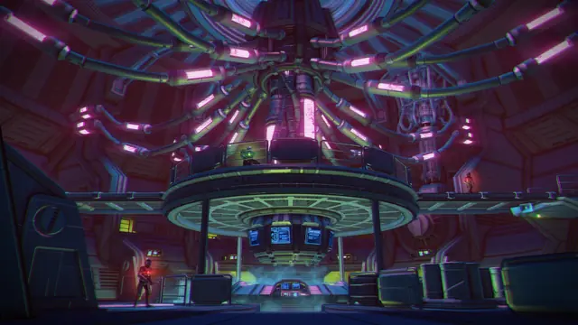
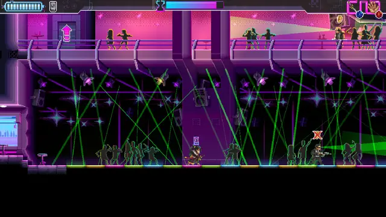
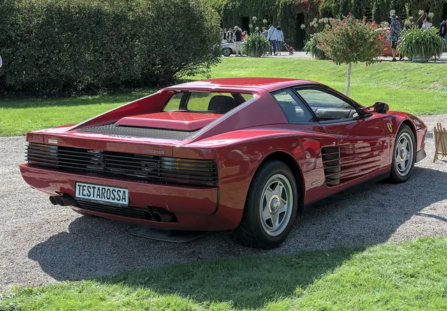
Games
- OutRun
The source of the name. Study the scaled sprites and the radio.4
- Far Cry 3: Blood Dragon
Far Cry 3 rebuilt with cyborgs, fog and neon.3
- Hotline Miami
The breakthrough synthwave soundtrack, in a top-down pixel game.1
- Neon Drive
A rhythm-action racer where the beat moves the road.1
- Katana ZERO
Pixel neon and a synth score used for tension, not just cool.
- Retrowave
Copy its sunset grading and the cockpit camera.
Film, art and more
- Drive
Its soundtrack reached a mainstream audience, and its hot pink poster type set the look.1
- OutRun
Kavinsky's album, titled after the arcade game, with a Testarossa and palms on the cover.1
- Kung Fury
The whole style played as comedy, with its VHS artefacts turned up.
- Blade Runner
Early synthwave set out to imitate 1980s film scores, this one above all.2
- Tron
The likely origin of the grid lines.2
Sources
- 1How synthwave music inspired games to explore a past that never existed
- 2Aesthetics Exploration: Synthwave
- 3The '80s Strike Back: The Complete Story Behind Blood Dragon
- 4Sega's Out Run: Even better than the wheel thing
- 5A Guide to Synthwave
- 6Showcase of Rad Retro Designs with 80s Style Chrome Text Effects
- 7Patterns
- 8Synthwave Shader: How it Works
- 9Lou's Pseudo 3d Page
- 10How To Create a Chrome Text Effect in Adobe Illustrator